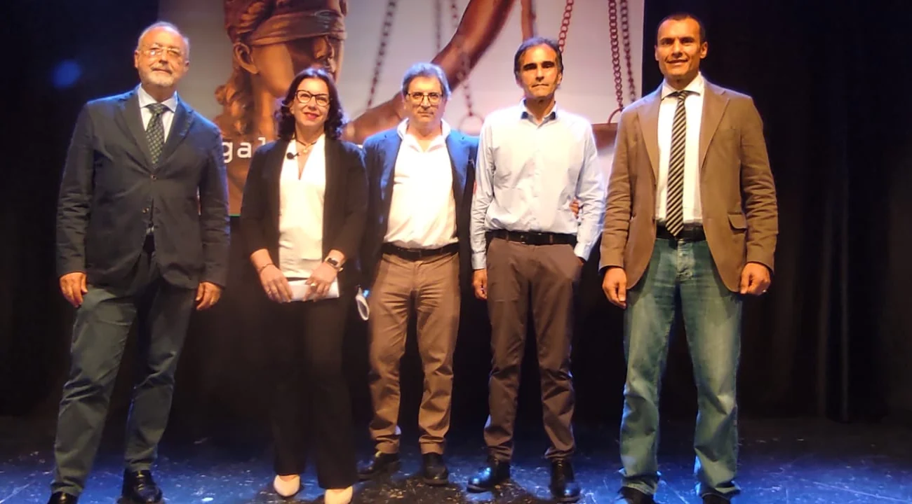

Avv. Vincenzo Stante
Lawyer, member of the Bari Bar
Via Giovanni Casalino 41, 70019 Triggiano (Bari), Italy
Court of Bari and the other courts of the district
Online consultation on your documents
Send me the documents you have received: I review them and you receive a written opinion, in Italian or English, on where things stand and what is best to do. From anywhere, with the price agreed before I start.
From €150 plus overheads, lawyers' pension fund contribution and stamp duty
How it worksThe practice
I assist individuals, families and businesses in criminal proceedings and in family and civil disputes, before the Court of Bari and the other courts of the district.
Every case starts with a full reading of the file. Before starting, I explain to the client which options are available, how long they take and what they cost, and I keep them informed at every step.
I see clients in Triggiano by appointment. Consultations are held in Italian and English; for other languages, with an interpreter if needed. For those who qualify, I act under state-funded legal aid.

Practice areas
The areas in which I provide assistance, in and out of court. The detailed pages are in Italian.
-
Criminal law
Defence of suspects, defendants and victims: investigations, precautionary measures, preliminary hearing, alternative procedures, trial, appeal and appeal to the Court of Cassation.
-
Family and children
Separation and divorce, custody and child maintenance, variation of arrangements, child protection proceedings, support administration for vulnerable adults.
-
Civil law and compensation
Road accidents and liability of public authorities, leases, condominium disputes, debt recovery, assisted negotiation.
-
State-funded legal aid
Checking the income requirements and preparing the application for admission, in criminal and civil cases.
Media appearances
Television appearances, in Italian.

Book an appointment
Call or write on WhatsApp with a few lines about your matter: I will get back to you to arrange the date and time of the first meeting.
Consultations in Italian and English; for other languages, with an interpreter if needed.
Via Giovanni Casalino 41
70019 Triggiano (BA), Italy
+39 340 183 4145
avv.vincenzostante@gmail.com
Directions
Google Maps Apple Maps (iPhone)